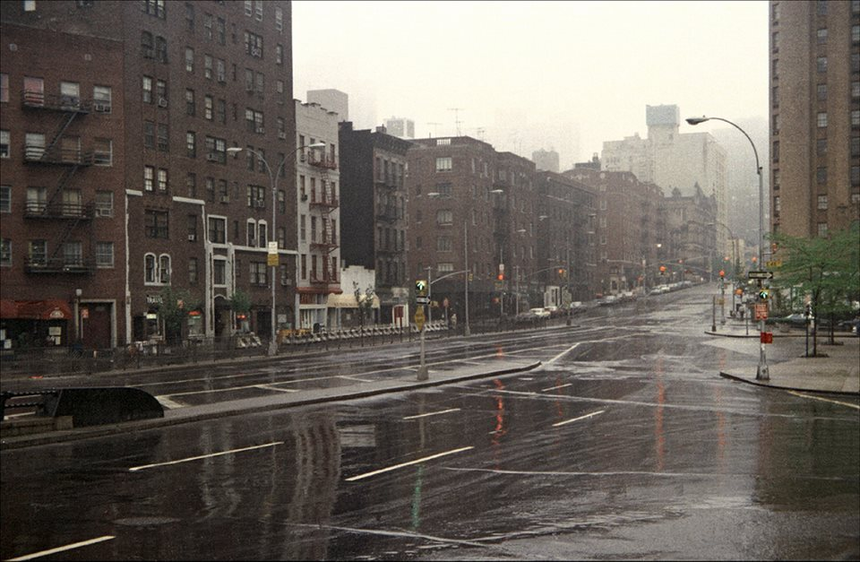
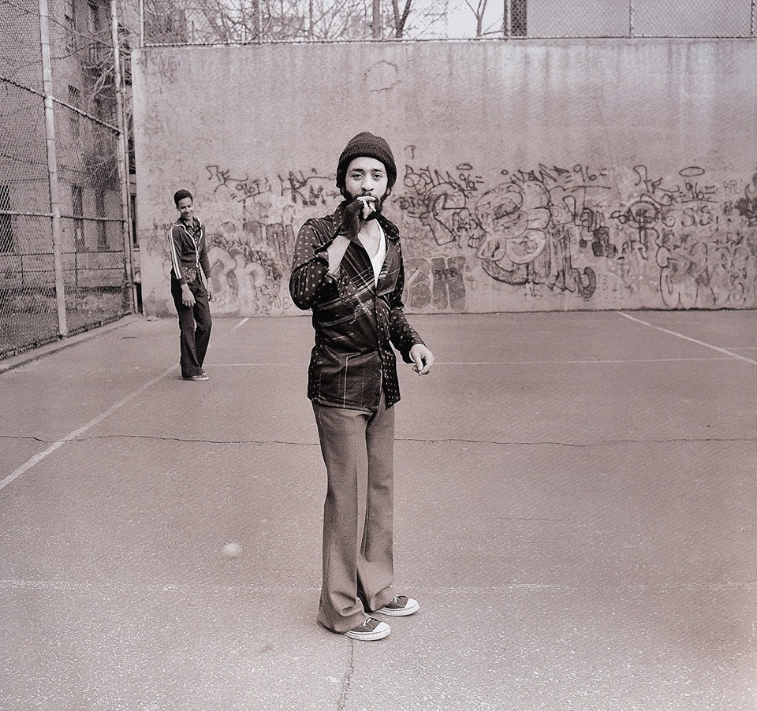
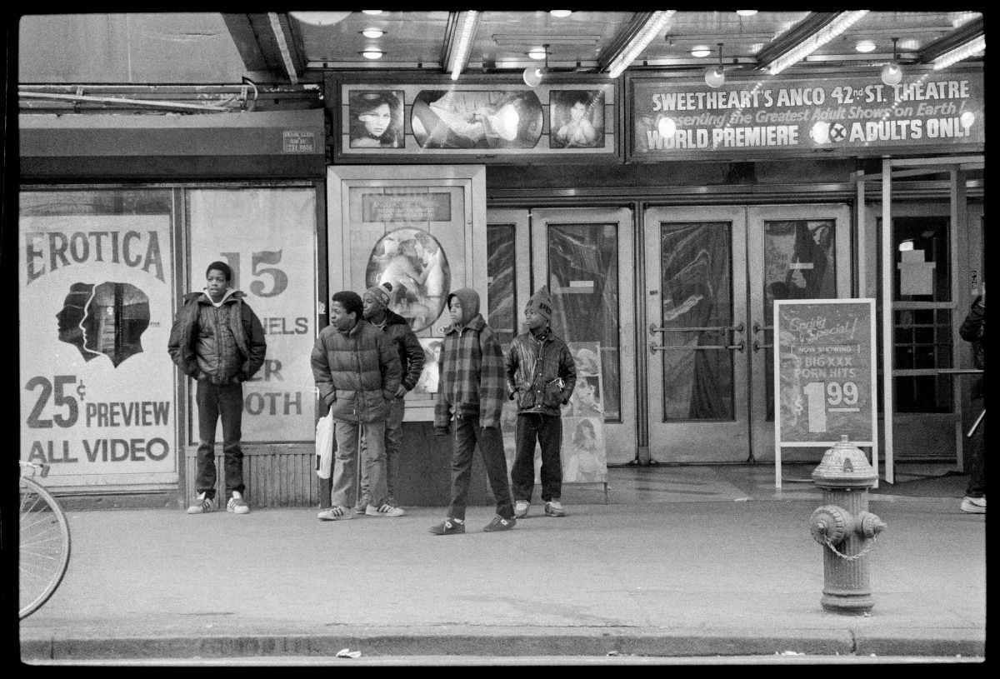
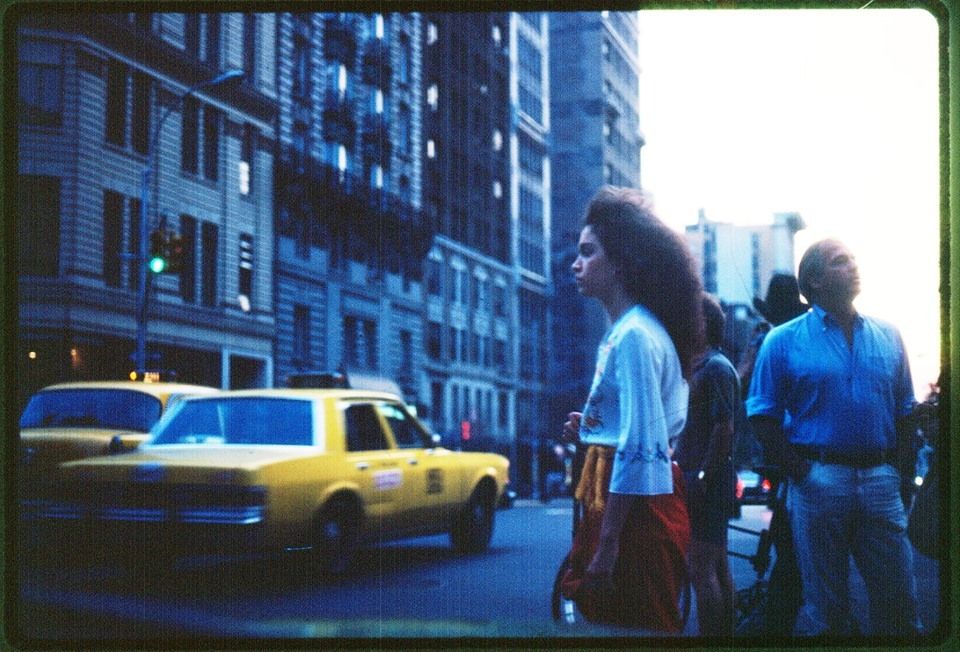
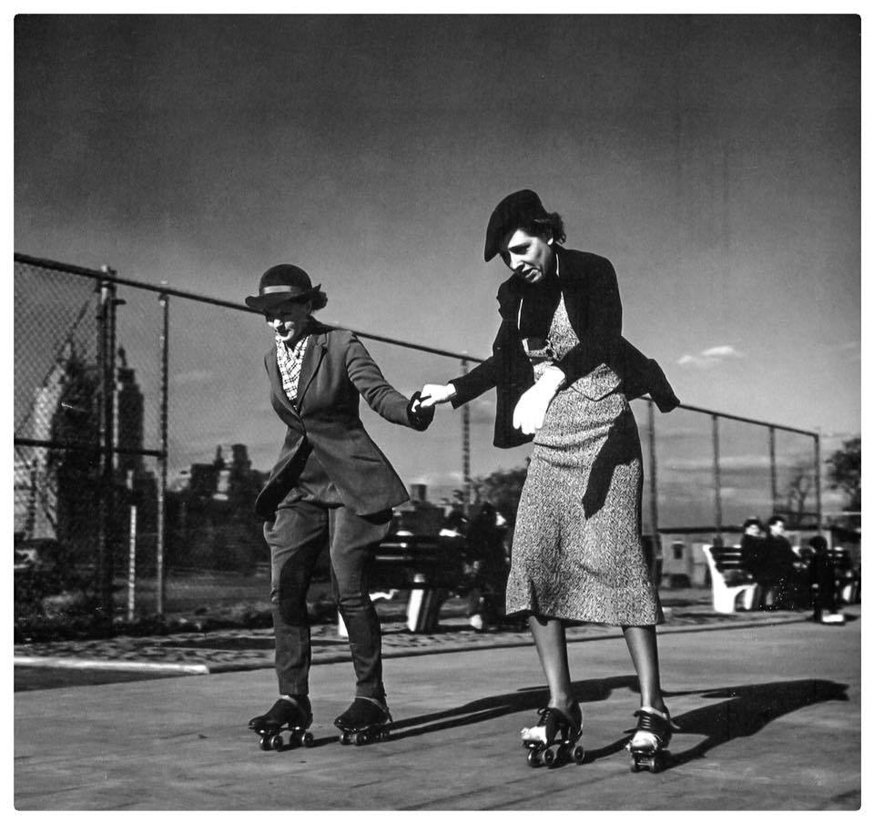
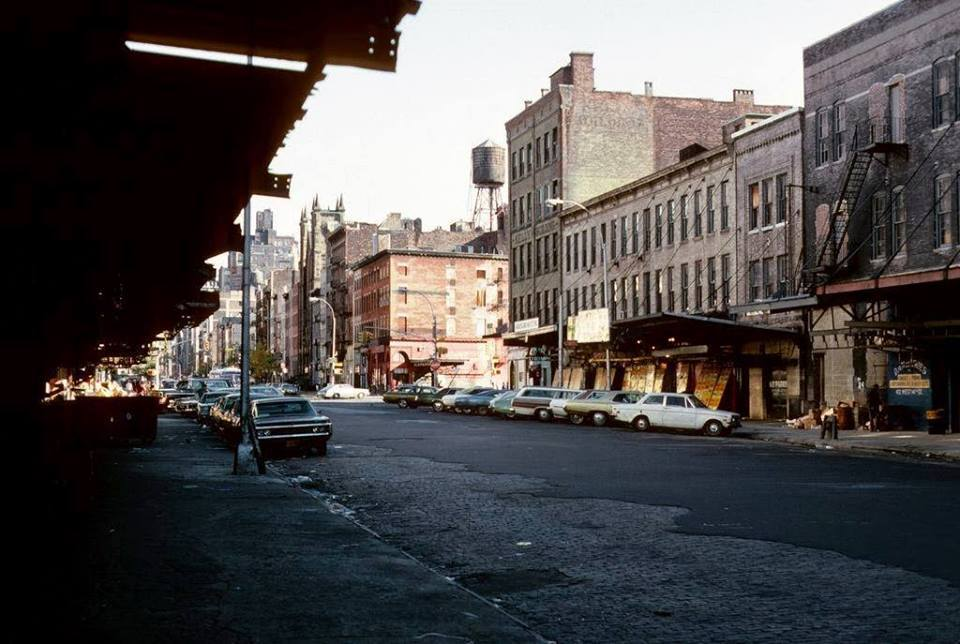
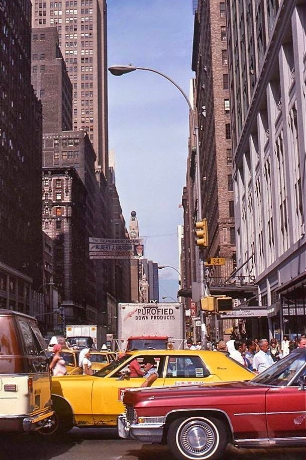
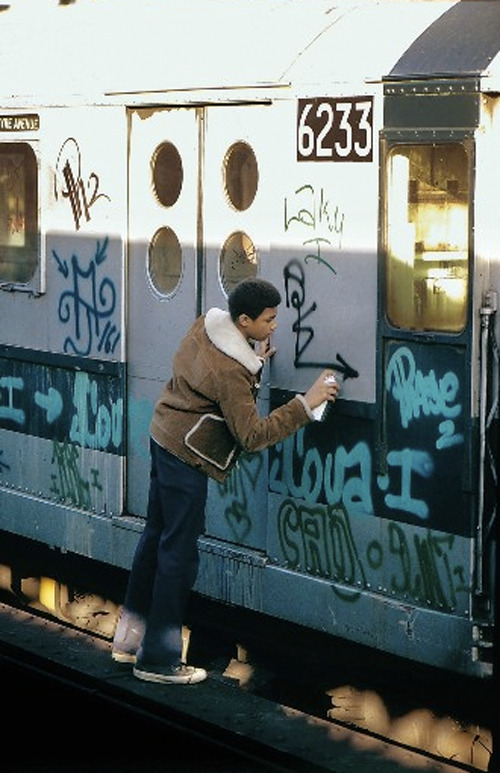
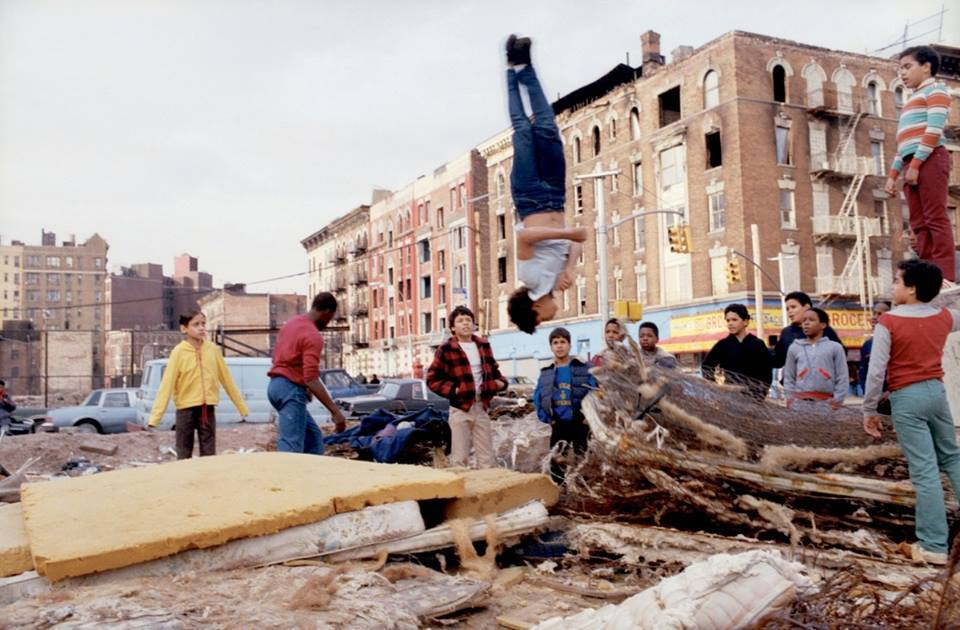

Subway 1980
Subway 1980

Amsterdam and 63rd, 1960s

Columbus Ave in the 80s

48th and 1st, 1979

Peep show, 1980s

What passed for a playground in 1978

(via Juxtapoz Magazine)

Upper West Side, 1983
The north side of St Marks Place between Second and Third Avenues. Photo taken in 1975 by Chris Protopapas.

During the filming of “Hair” in Central Park, 1978

Washington Square Park in the late 70s

13th Street at 9th Ave, 1980s. Work it, girl.

The Bowery, 1976

Roller Disco in 1936

73rd Precinct, Brownsville, Brooklyn, early 80s

Bronx, 1980

New York. Soldiers and Sailors Monument, Riverside Drive, 1907. Those canons are a not very well concealed threat by the N.Y. Arts Commission to anyone who takes a frivolous attitude to public art placement.

White shorts, 1973

14th Street between 9th and 10th Ave, 1976

Reagan fixing the South Bronx, 1980

Broadway and 18th in the late 60s.

34th Street and 7th Avenue, Manhattan, New York, 1977

Groovy. 1975

New York. Isaac L. Rice house, 89th St and Riverside Drive, circa 1905.

Old school

South Bronx kids, 1985

Greenwich Street in the 70s

Harlem in the 1960s